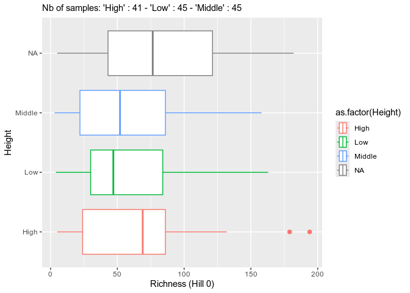
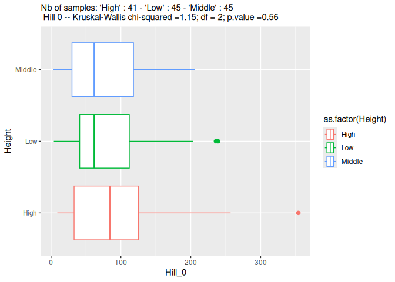
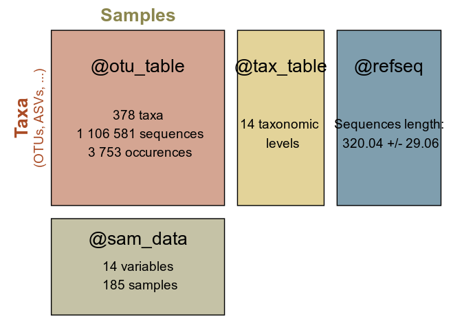
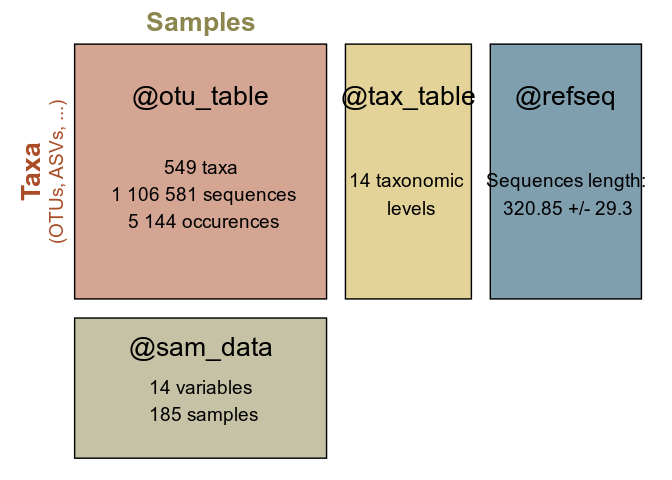

MiscMetabar
The goal of MiscMetabar is to complete the great packages dada2, phyloseq and targets. See the pkdown site here.
Installation
There is no CRAN version of MiscMetabar for now.
You can install the development version from GitHub with:
install.packages("devtools")
#> Installation du package dans '/home/adrien/R/x86_64-pc-linux-gnu-library/4.1'
#> (car 'lib' n'est pas spécifié)
devtools::install_github("adrientaudiere/MiscMetabar")
#> Skipping install of 'MiscMetabar' from a github remote, the SHA1 (fc296a84) has not changed since last install.
#> Use `force = TRUE` to force installationSome use of MiscMetabar
Summarize a physeq object
library("MiscMetabar")
#> Le chargement a nécessité le package : ggplot2
#> Le chargement a nécessité le package : phyloseq
#> Le chargement a nécessité le package : dada2
#> Le chargement a nécessité le package : Rcpp
#> Le chargement a nécessité le package : magrittr
library("phyloseq")
library("magrittr")
data("data_fungi")
summary_plot_phyloseq(data_fungi)
Create an interactive table of the tax_table
data("GlobalPatterns")
tax_datatable(subset_taxa(GlobalPatterns,
rowSums(GlobalPatterns@otu_table) > 100000))Sankey diagramme of the tax_table
gp <- subset_taxa(GlobalPatterns, GlobalPatterns@tax_table[, 1] == "Archaea")
sankey_phyloseq(gp, taxa = c(1:5))Circle for visualise distribution of taxa in function of samples variables
otu_circle(gp, "SampleType", taxa = "Class")
#> Only 4 modalities are plot (44.44%). Use 'min_prop_mod' to plot more samples.
#> Only 4 taxa are plot (44.44%). Use 'min_prop_tax' to plot more taxa
Re-clustering ASV
Using decipher or Vsearch algorithm
data(data_fungi_sp_known)
otu <- asv2otu(data_fungi_sp_known, method = "IdClusters")
#> Determining distance matrix based on shared 8-mers:
#> ================================================================================
#>
#> Time difference of 3.32 secs
#>
#> Clustering into groups by similarity:
#> ================================================================================
#>
#> Time difference of 0.12 secs
#>
#> Aligning Sequences:
#> ================================================================================
#>
#> Time difference of 3.71 secs
#>
#> Iteration 1 of 2:
#>
#> Determining distance matrix based on alignment:
#> ================================================================================
#>
#> Time difference of 0.41 secs
#>
#> Reclustering into groups by similarity:
#> ================================================================================
#>
#> Time difference of 0.12 secs
#>
#> Realigning Sequences:
#> ================================================================================
#>
#> Time difference of 2.7 secs
#>
#> Iteration 2 of 2:
#>
#> Determining distance matrix based on alignment:
#> ================================================================================
#>
#> Time difference of 0.4 secs
#>
#> Reclustering into groups by similarity:
#> ================================================================================
#>
#> Time difference of 0.11 secs
#>
#> Realigning Sequences:
#> ================================================================================
#>
#> Time difference of 1.46 secs
#>
#> Refining the alignment:
#> ================================================================================
#>
#> Time difference of 0.72 secs
#>
#> ================================================================================
#>
#> Time difference of 0.41 secs
#>
#> ================================================================================
#>
#> Time difference of 0.01 secs
otu_vs <- asv2otu(data_fungi_sp_known, method = "vsearch")
summary_plot_phyloseq(data_fungi_sp_known)

summary_plot_phyloseq(otu_vs)
Using lulu algorithm (https://www.nature.com/articles/s41467-017-01312-x)
data(data_fungi_sp_known)
lulu_res <- lulu_phyloseq(data_fungi_sp_known)
#> Start Vsearch usearch_global
#> Le chargement a nécessité le package : lulu
#> Lulu algorithm
#> Le chargement a nécessité le package : dplyr
#>
#> Attachement du package : 'dplyr'
#> Les objets suivants sont masqués depuis 'package:stats':
#>
#> filter, lag
#> Les objets suivants sont masqués depuis 'package:base':
#>
#> intersect, setdiff, setequal, union
#> | | | 0% | | | 1% | |= | 1% | |= | 2% | |= | 3% | |== | 3% | |== | 4% | |== | 5% | |=== | 5% | |=== | 6% | |=== | 7% | |==== | 7% | |==== | 8% | |==== | 9% | |===== | 9% | |===== | 10% | |===== | 11% | |====== | 11% | |====== | 12% | |====== | 13% | |======= | 13% | |======= | 14% | |======= | 15% | |======== | 15% | |======== | 16% | |======== | 17% | |========= | 17% | |========= | 18% | |========= | 19% | |========== | 19% | |========== | 20% | |========== | 21% | |=========== | 21% | |=========== | 22% | |=========== | 23% | |============ | 23% | |============ | 24% | |============ | 25% | |============= | 25% | |============= | 26% | |============= | 27% | |============== | 27% | |============== | 28% | |============== | 29% | |=============== | 29% | |=============== | 30% | |=============== | 31% | |================ | 31% | |================ | 32% | |================ | 33% | |================= | 33% | |================= | 34% | |================= | 35% | |================== | 35% | |================== | 36% | |================== | 37% | |=================== | 37% | |=================== | 38% | |=================== | 39% | |==================== | 39% | |==================== | 40% | |==================== | 41% | |===================== | 41% | |===================== | 42% | |===================== | 43% | |====================== | 43% | |====================== | 44% | |====================== | 45% | |======================= | 45% | |======================= | 46% | |======================= | 47% | |======================== | 47% | |======================== | 48% | |======================== | 49% | |========================= | 49% | |========================= | 50% | |========================= | 51% | |========================== | 51% | |========================== | 52% | |========================== | 53% | |=========================== | 53% | |=========================== | 54% | |=========================== | 55% | |============================ | 55% | |============================ | 56% | |============================ | 57% | |============================= | 57% | |============================= | 58% | |============================= | 59% | |============================== | 59% | |============================== | 60% | |============================== | 61% | |=============================== | 61% | |=============================== | 62% | |=============================== | 63% | |================================ | 63% | |================================ | 64% | |================================ | 65% | |================================= | 65% | |================================= | 66% | |================================= | 67% | |================================== | 67% | |================================== | 68% | |================================== | 69% | |=================================== | 69% | |=================================== | 70% | |=================================== | 71% | |==================================== | 71% | |==================================== | 72% | |==================================== | 73% | |===================================== | 73% | |===================================== | 74% | |===================================== | 75% | |====================================== | 75% | |====================================== | 76% | |====================================== | 77% | |======================================= | 77% | |======================================= | 78% | |======================================= | 79% | |======================================== | 79% | |======================================== | 80% | |======================================== | 81% | |========================================= | 81% | |========================================= | 82% | |========================================= | 83% | |========================================== | 83% | |========================================== | 84% | |========================================== | 85% | |=========================================== | 85% | |=========================================== | 86% | |=========================================== | 87% | |============================================ | 87% | |============================================ | 88% | |============================================ | 89% | |============================================= | 89% | |============================================= | 90% | |============================================= | 91% | |============================================== | 91% | |============================================== | 92% | |============================================== | 93% | |=============================================== | 93% | |=============================================== | 94% | |=============================================== | 95% | |================================================ | 95% | |================================================ | 96% | |================================================ | 97% | |================================================= | 97% | |================================================= | 98% | |================================================= | 99% | |==================================================| 99% | |==================================================| 100%
summary_plot_phyloseq(data_fungi_sp_known)
summary_plot_phyloseq(lulu_res$new_physeq)